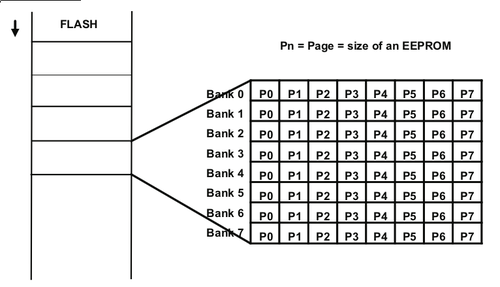

Flash vs EEPROM 区别以及操作方法
工艺
Flash和EEPROM是类似的存储介质，从存储的原理上基本上是一样的，差别仅仅在于Flash一般是整块操作，而EEPROM可以按字节操作，比较适合大块数据的操作。
Flash memory is a later form of EEPROM. In the industry, there is aconvention to reserve the term EEPROM to byte-wise erasable memoriescompared to block-wise erasable flash memories. EEPROM takes more die areathan flash memory for the same capacity because each cell usually needs botha read, write and erase transistor, while in flash memory the erase circuitsare shared by large blocks of cells (often 512×8).
虽然功能类似，由于擦除的操作特性不同，Flash比较适合大块的存储数据，比如程序本身；EEPROM比较适合可以修改的数据，比如自定义运行参数。芯片设计中可以把两者放在同一个芯片（比如AVR系列）；或者使用单独一小块Flash作为配置数据，增加ECC（比如TI UCD系列）；如果只有Flash，也可以用某块单独Page的Flash作为模拟EEPROM的擦写效果，TI提供了TMS320Fxx使用片内Flash模拟EEPROM的操作方法。。
看文档需要注意的几个方面：
- 启动时需要把Flash操作的API拷贝到RAM
- 需要把整个sector作为操作对象
- 循环使用Flash，对已经写过的区域打标签
读写时间
Flash的擦除是整块进行操作，而EEPROM可以单个byte清除。擦除之后，Flash的写入时间较EEPROM短，Flsh的典型值是50us，而EEPROM的典型值是5-10ms。所以外置Flash（通常是AND Flash）的读写总线经常是SPI, 而EEPROM是IIC。

blog comments powered by Disqus
介一个IT民工甲，Firmware，嵌入式，数字电源，伪Geek，
80后伪奋青，Canon 450D，Arch Linux，Kindle，一介书生
www.jieyige.com